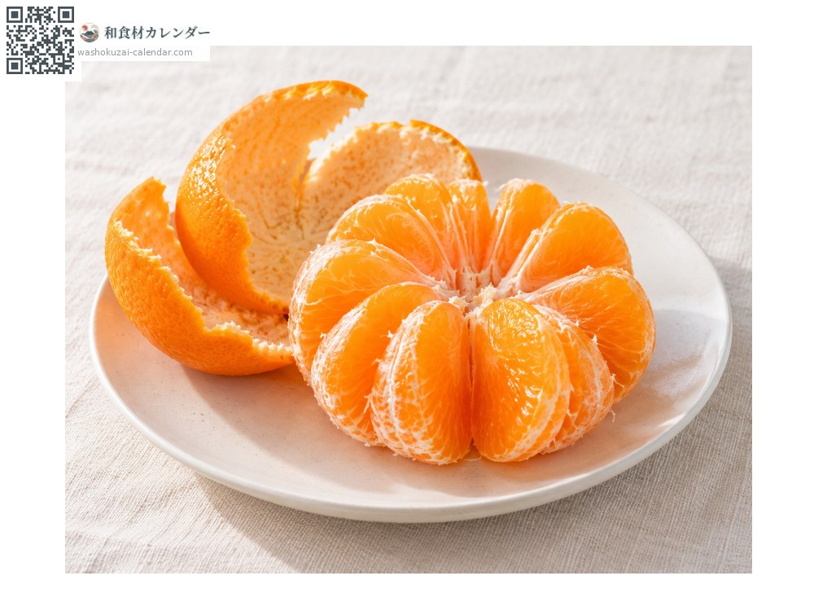
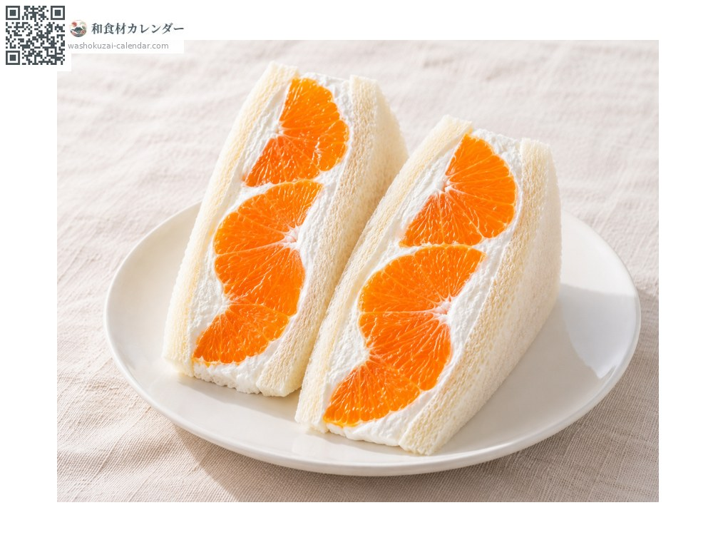
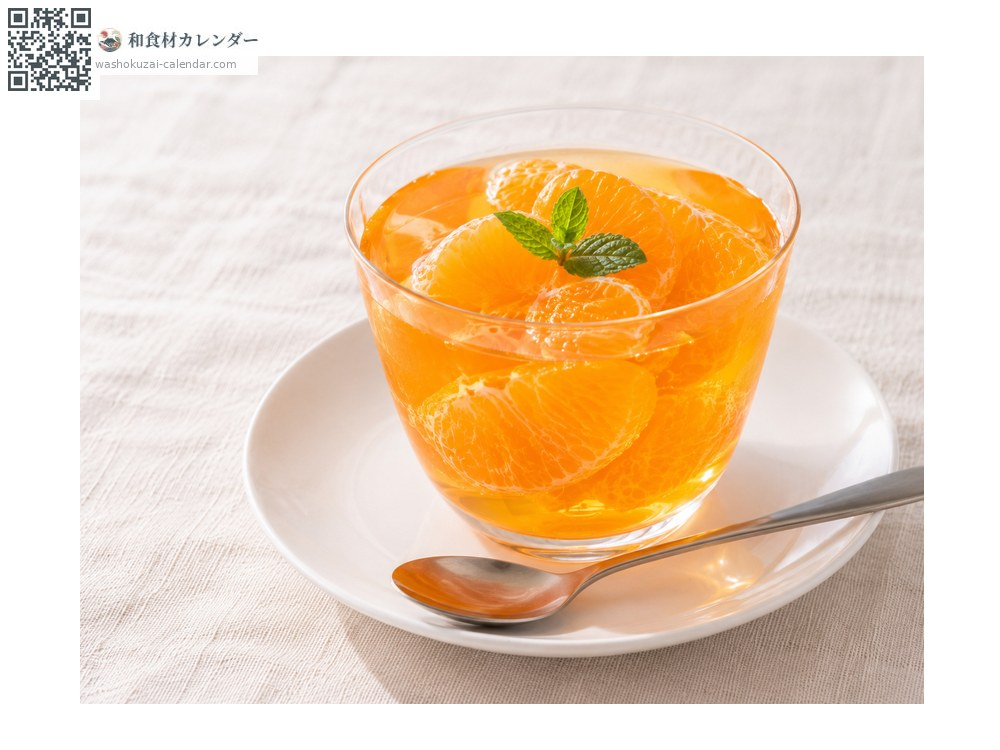
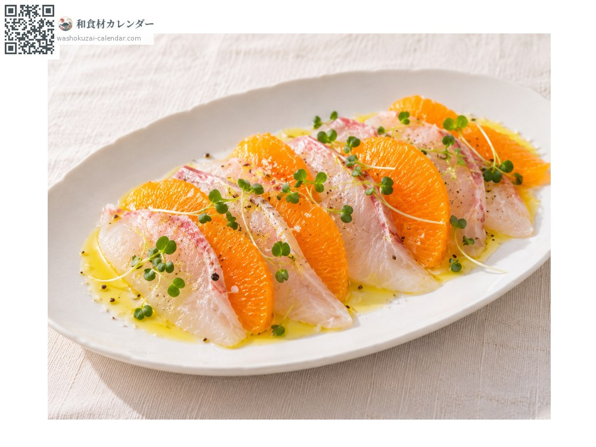

水果
濑户香
せとか せとか setoka
别名setoka、mikan
应季时期为2月、3月

应季时期
1月
2月
3月
4月
5月
6月
7月
8月
9月
10月
11月
12月
应季有供应
烹饪方法

直接生食
薄膜可以连着吃，果肉柔软多汁。

水果三明治
整瓣果肉与鲜奶油夹入吐司，切面漂亮。

果冻
果汁连同果瓣一起凝固。

生鱼薄片
果瓣搭配白肉鱼生鱼片，淋上橄榄油。
挑选方法
果皮薄而有光泽、呈深橘色，拿起来沉甸甸的。
保存方法
装袋防止干燥，放入冰箱蔬果室。果皮薄容易受损，宜尽早食用。
主要产地
小知识
由清见与安可柑杂交后，再与茂谷柑杂交而成，2001年登记。名称取自培育地长崎县口之津附近的早崎濑户（海峡）。果肉入口即化，被称为「柑橘中的金枪鱼大腹」。